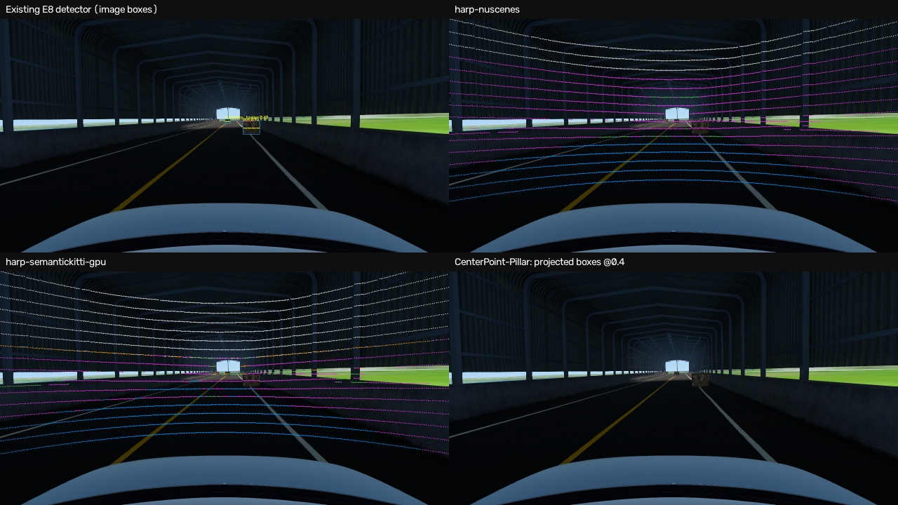
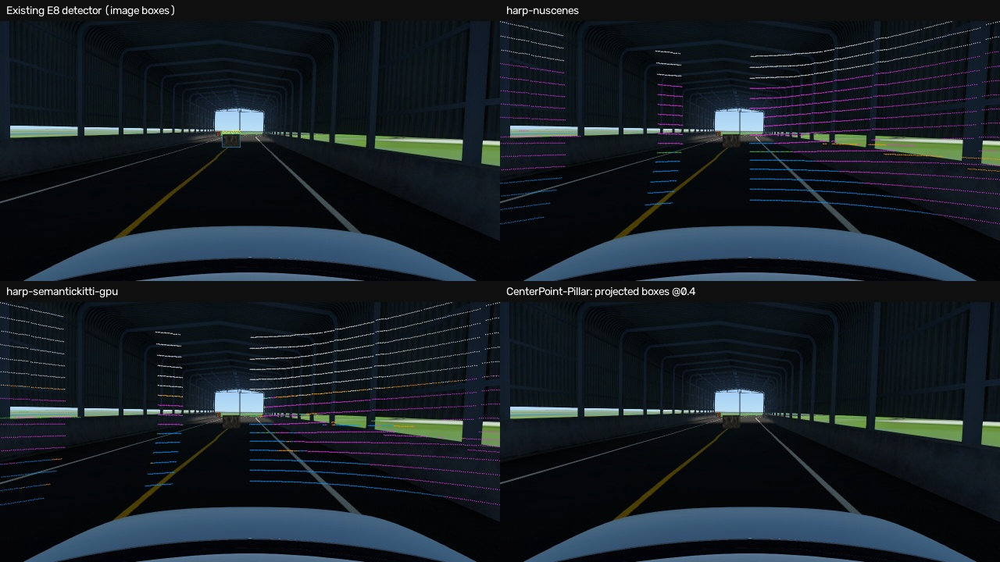
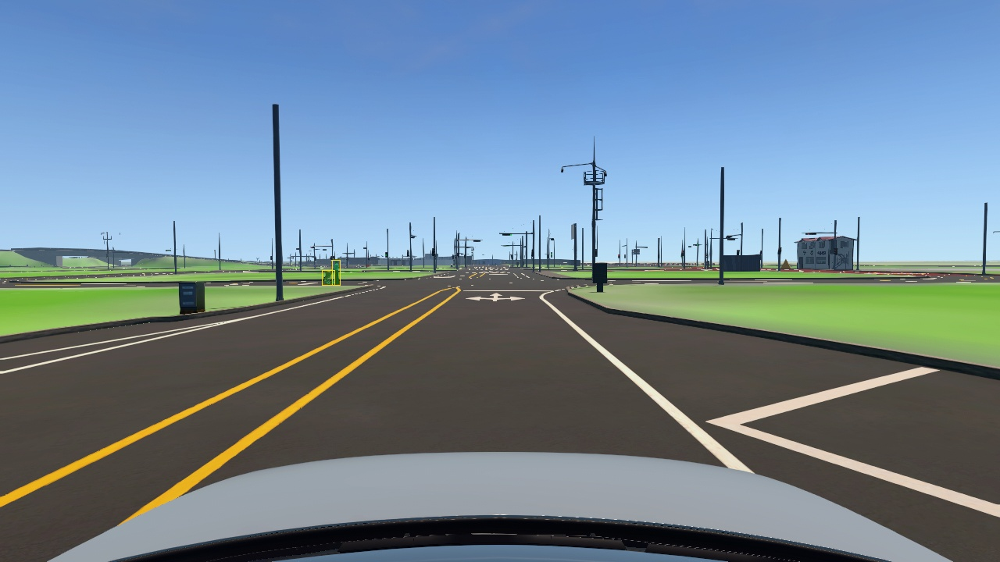
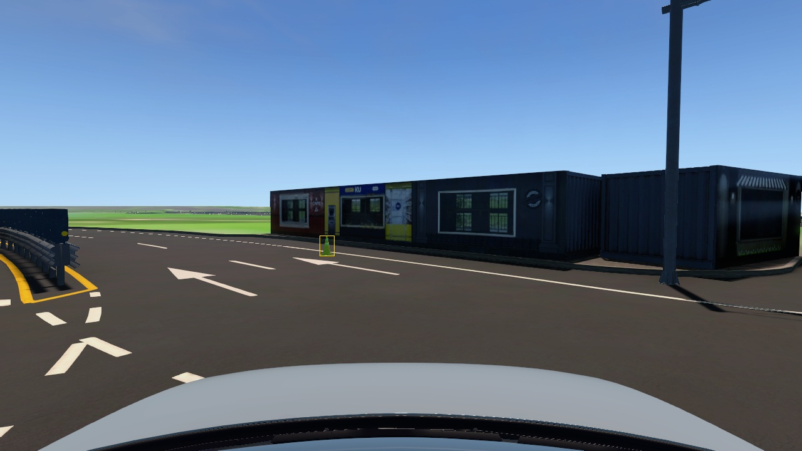

모델별 208 scan. 공유 GPU에서 실행했으며 독립 GT 정확도·실시간 수락이 아닙니다. 센서 raw frame의 출력입니다.
HARP 점: 노면 파랑, 구조물 계열 분홍, 객체 계열 주황, 기타 초록, 학습 FoV 밖 회색. 구조물 계열에는 충돌 가능한 물체가 포함될 수 있습니다.
CenterPoint는 nuScenes 10-sweep 가중치에 단일 scan을 입력했습니다. 상자 클래스가 없고 속도 출력은 유효하지 않습니다.


Train native-mask inspection examples; source IDs and checks in segmentation-reuse-inspected-masks.json.

